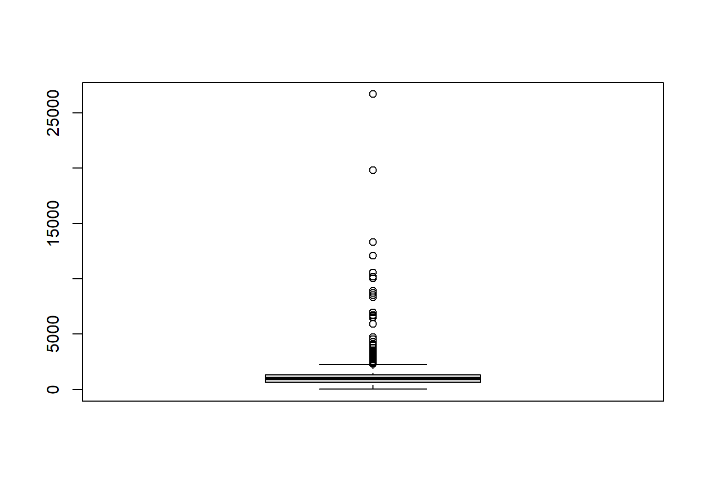
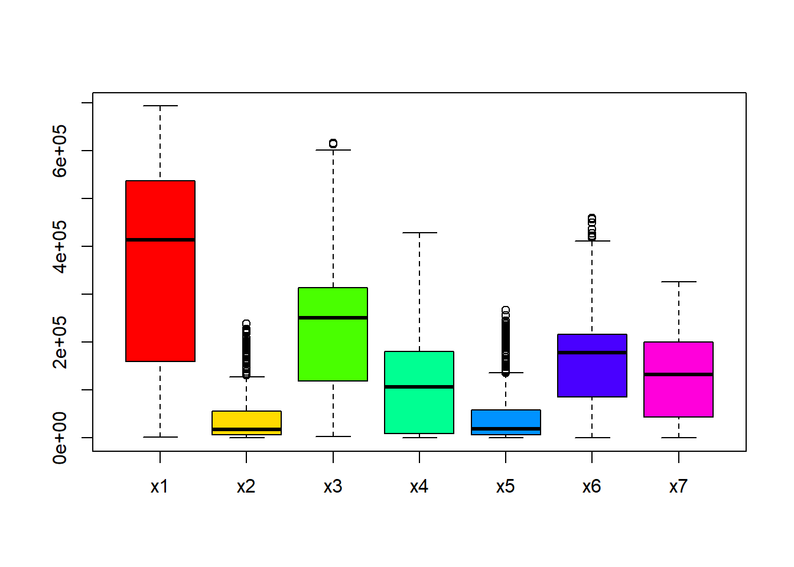
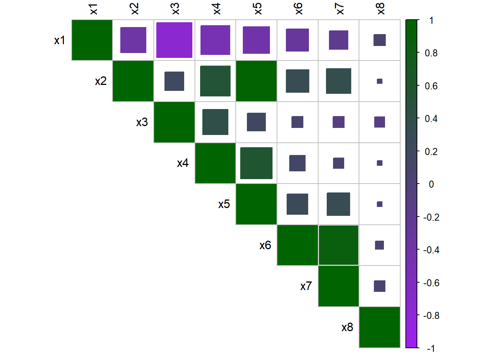

8 Bayesian Hierarchical Population Modelling in R
This module expands upon the Bayesian hierarchical population modelling covered in earlier modules, focusing instead on the methods with spatial data. It introduces the key different data sources, methods for covariate extraction, exploratory analysis, and model set up. The remainder of the module briefly covers the STAN (MCMC) approach, and goes into detail for the INLA-SPDE approach to Bayesian hierarchical modelling.
8.1 Data sources
8.1.1 Population data
There are three main forms of population (or demographic) data: micro-census, partial census and pre-survey listings. A brief description of each is given as follows.
- Micro-census: A targeted household survey that covers a fraction of the population. It is a complete enumeration of a micro-census cluster. However, there are very scarce data contexts with no data to re-purpose.
- Partial census: It covers only a part of the population or country. Useful when there are inaccessible areas, locations in conflict or territories controlled by anti-government groups, among other uses.
- pre-survey listings: Identifying and listing all household or dwellings in the survey area. It is done through defining the survey frame and re-purposing household surveys (e.g. health, livestock, …).
There are 4 main steps for processing data as follows.
- Identify the spatial unit of analysis
- Identify variables common in the shapefile and the survey dataset (unique ids)
- Summarise variables of interest in the survey data
- Join the summarised survey data with the shapefile using unique ids
Each of the datasets must be summarised by summing the household size to get the total population in each enumeration area (EA). This can be done using the following code as a template.
#Data survey 1
Data_survey1 <- Data_survey1 %>%
group_by(EA_ID) %>%
summarise(Total_Pop = sum(HH_Size)) %>%
mutate(Survey = "survey1")
#Data survey 2
Data_survey2 <- Data_survey2 %>%
group_by(EA_ID) %>%
summarise(Total_Pop = sum(HH_Size)) %>%
mutate(Survey = "survey2")
#Data survey 3
Data_survey3 <- Data_survey3 %>%
group_by(EA_ID) %>%
summarise(Total_Pop = sum(HH_Size)) %>%
mutate(Survey = "survey3")
#rbind all data as one data frame
combined_data <- rbind(Data_survey1, Data_survey2, Data_survey3)This data processing is demonstrated in the following code using the functions group_by(), sumarise() and mutate() with the 5 Cameroon survey datasets:
Data_CMISwas collected in 2022Data_EESIwas collected in 2021Data_ECAM1was collected in the first Quarter of 2021Data_ECAM2was collected in the second Quarter of 2021Data_ECAM3was collected in the third Quarter of 2021
#load datasets
Data_ECAM1 <- read.csv(paste0(data_path, "Data_ECAM1.csv"))
Data_ECAM2 <- read.csv(paste0(data_path, "Data_ECAM2.csv"))
Data_ECAM3 <- read.csv(paste0(data_path, "Data_ECAM3.csv"))
Data_EESI <- read.csv(paste0(data_path, "Data_EESI.csv"))
Data_CMIS <- read.csv(paste0(data_path, "Data_CMIS.csv"))
#Data_CMIS
Data_CMIS <- Data_CMIS %>%
group_by(EA_ID) %>%
summarise(Total_Pop = sum(HH_Size)) %>%
mutate(Survey = "CMIS")
#Data_EESI
Data_EESI <- Data_EESI %>%
group_by(EA_ID) %>%
summarise(Total_Pop = sum(HH_Size))%>%
mutate(Survey = "EESI")
#Data_ECAM1
Data_ECAM1 <- Data_ECAM1 %>%
group_by(EA_ID) %>%
summarise(Total_Pop = sum(HH_Size))%>%
mutate(Survey = "ECAM1")
#Data_ECAM2
Data_ECAM2 <- Data_ECAM2 %>%
group_by(EA_ID) %>%
summarise(Total_Pop = sum(HH_Size))%>%
mutate(Survey = "ECAM2")
#Data_ECAM3
Data_ECAM3 <- Data_ECAM3 %>%
group_by(EA_ID) %>%
summarise(Total_Pop = sum(HH_Size))%>%
mutate(Survey = "ECAM3")
#rbind all data as one data frame
combined_data <- rbind(Data_CMIS, Data_EESI, Data_ECAM1, Data_ECAM2, Data_ECAM3)In different surveys, as with this example of the five surveys, some enumeration areas are surveyed in a different survey. In this instance, the most recent survey needs to be maintained. For example if a particular EA was surveyed in both CMIS (2022) and EESI (2021), CMIS is maintained since it is the most recent. This will be done across all surveys to ensure that there are not duplicated EAs in the dataset.
In order to do this, the data must be ordered using the function mutate() before removing the duplicated data in order of priority with the functions arrange() and filter().
#order data
combined_data <- combined_data %>%
mutate(Data_Priority = case_when(Survey == "ECAM1" ~ 1,
Survey == "ECAM2" ~ 2,
Survey == "ECAM3" ~ 3,
Survey == "EESI" ~ 4,
Survey == "CMIS" ~ 5))
#remove duplicated EA in order of priority
combined_data <- combined_data %>%
arrange(EA_ID, -Data_Priority) %>%
filter(!duplicated(EA_ID)) Once the duplicates are removed, the shapefile for the enumeration area can be joined with the combined survey dataset based on on the enumeration area ID which is a unique ID to both datasets.
## Reading layer `EA_shapefile' from data source
## `F:\Study\WorldPop Training Materials\GitBook\wp_training_manual\data\CMR\EA_shapefile.shp'
## using driver `ESRI Shapefile'
## Simple feature collection with 2290 features and 1 field
## Geometry type: MULTIPOLYGON
## Dimension: XY
## Bounding box: xmin: 8.498025 ymin: 1.653369 xmax: 16.1904 ymax: 12.96129
## Geodetic CRS: WGS 84#join the shapefile and data based on EA_ID (a unique id to both datasets)
Population_data <- inner_join(EA_Shapefile, combined_data, by = "EA_ID")Finally, the unwanted variables can be removed from the resulting population data with the final result outputted as a shapefile.
8.1.2 Settlement data
There are four main sources of settlement data, detailed as follows.
- Building footprints: Typically given as a polygon shapefile of buildings. Sources of building footprints are:
- Maxar & Ecopia building footprint (with processing partner: Ecopia AI), a frequently used settlement data source for gridded population estimations.
- Google - Open Buildings, available from Google.
- Microsoft - Building Footprints, available on GitHub.
- World Settlement Footprint (with processing partners: A collaboration between the European Space Agency, German Aerospace Center and Google Earth Engine). This dataset is given as a raster based on Sentinel 2.
- OpenStreetMap
- Built-up area: Typically a raster file at 100m resolution. A source of this is:
- GHS-Built-Up Surface Global Human Settlement Layer (with processing partner: European Commission).
- Gridded building intensity: This is provided by Planet
- NSO building datasets: This is data on building information collected during a census or survey, the building count and/or the building classification.
There are multiple uses of settlement data. For example, as a proxy to extrapolate population totals. In this instance, the building count or settled area is used as the input and can be used to model the population in surveyed areas, to estimate the population total in areas not surveyed and to produce high resolution estimates. Additionally, settlement data can be used as covariates to detect density variation. For this use, of interest are the different summary metrics (area, perimeter, proximity, angle, shape, …), the different aggregation metrics at the grid cell (minimum, mean, maximum, standard deviation, …) and the different window sizes for contextual information.
8.1.3 Other sources
Settlement data is not the only source of geospatial data. Other sources include (but are not limited to):
- Night-time light
- Distance to hospitals
- Distance to schools
- Water bodies
- Vegetation cover
- Land uses
- Conflict data
However, not all geospatial data sources are good to use as geospatial covariates in a model. When selecting a geospatial covariate, it needs to be considered whether or not the covariate has a significant effect on population. Additionally, the availability of the covariate data (open-source/closed) should be considered, along with the spatial and temporal resolution of the covariate.
8.2 Data cleaning and covariates extraction
Prior to working with the covariates and modelling the data, the data itself must be extracted. To demonstrate these methods, the Cameroon population data will be used as an example. The extraction process essentially overlays polygons onto the covariate raster data, and extracts the covariate information from each raster that is within the polygon.
To begin with, the relevant data must be read into R. In this case, the population dataset must also be projected using the function st_transform() to be the same spatial reference as the mastergrid.
#install raster processing packages
install.packages("terra")
install.packages("tictoc")
install.packages("exactextractr")#load raster processing packages
library(terra) #raster analysis
library(tictoc)
library(exactextractr) #covariate extraction
library(raster)#read combined population dataset and mastergrid
pop_data_shp <- st_read(paste0(data_path, "Population/EA_population.shp"))## Reading layer `EA_population' from data source
## `F:\Study\WorldPop Training Materials\GitBook\wp_training_manual\data\CMR\Population\EA_population.shp'
## using driver `ESRI Shapefile'
## Simple feature collection with 1592 features and 3 fields
## Geometry type: MULTIPOLYGON
## Dimension: XY
## Bounding box: xmin: 8.498025 ymin: 1.653369 xmax: 16.1904 ymax: 12.96129
## Geodetic CRS: WGS 84mgrid <- rast(paste0(mgrid_path, "CMR_mastergrid_WP_ND.tif"))
#project pop_data to same spatial reference as mgrid
pop_data_shp <- st_transform(pop_data_shp, crs = st_crs(mgrid)) 8.2.1 Extracting continuous rasters
Starting with continuous rasters, first all of the continuous raster covariates must be imported. When there are multiple covariates, instead of importing each manually, the function list.files() can be used to list all of the relevant covariates at once. In this function, to extract the correct information, as arguments the drive path to the covariates must be specified under path, the file type specified under pattern (in this case, .tif$), whether you want all files (in this case all.files = TRUE) and whether you want full names (in this case full.names = FALSE).
#import all continuous raster covariates
raster_list <-list.files(path = raster_path1, pattern = ".tif$",
all.files = TRUE, full.names = FALSE)
#let see the rasters in the list
raster_list## [1] "acled_battles_2021_CMR_ed_masked.tif"
## [2] "acled_conflict_data_2021_CMR_ed_masked.tif"
## [3] "acled_explosions_2021_CMR_ed_masked.tif"
## [4] "acled_protests_2021_CMR_ed_masked.tif"
## [5] "acled_riots_2021_CMR_ed_masked.tif"
## [6] "acled_strategic_developments_2021_CMR_ed_masked.tif"
## [7] "acled_violence_against_civilians_2021_CMR_ed_masked.tif"
## [8] "CMR_AccessToCities2015.tif"
## [9] "CMR_buildings_cv_area.tif"
## [10] "CMR_buildings_cv_length.tif"
## [11] "CMR_buildings_density.tif"
## [12] "CMR_buildings_mean_area.tif"
## [13] "CMR_buildings_mean_length.tif"
## [14] "CMR_buildings_total_length.tif"
## [15] "CMR_dst_coastline_100m_2000_2020.tif"
## [16] "CMR_dst_in_water_100m_2000_2012.tif"
## [17] "CMR_esaccilc_dst011_100m_2015.tif"
## [18] "CMR_esaccilc_dst040_100m_2015.tif"
## [19] "CMR_esaccilc_dst130_100m_2015.tif"
## [20] "CMR_esaccilc_dst140_100m_2015.tif"
## [21] "CMR_esaccilc_dst150_100m_2015.tif"
## [22] "CMR_esaccilc_dst160_100m_2015.tif"
## [23] "CMR_esaccilc_dst190_100m_2015.tif"
## [24] "CMR_esaccilc_dst200_100m_2015.tif"
## [25] "CMR_FrictionVehicle2020.tif"
## [26] "CMR_FrictionWalk2020.tif"
## [27] "CMR_grid_100m_wclim_precip_2020.tif"
## [28] "CMR_grid_100m_wclim_temp_2020.tif"
## [29] "CMR_osm_dst_education.tif"
## [30] "CMR_osm_dst_health.tif"
## [31] "CMR_osm_dst_localroads.tif"
## [32] "CMR_osm_dst_majorroads.tif"
## [33] "CMR_osm_dst_mktplaces.tif"
## [34] "CMR_osm_dst_PofW.tif"
## [35] "CMR_osm_dst_Proad_intersections.tif"
## [36] "CMR_osm_dst_railways.tif"
## [37] "CMR_osm_dst_waterbodies.tif"
## [38] "CMR_osm_dst_waterways.tif"
## [39] "CMR_srtm_topo_100m.tif"
## [40] "CMR_viirs_100m_2020.tif"
## [41] "CMR_wdpa_dst_cat1_100m_2017.tif"Once all the covariates are imported, they can be stacked using the rast() function as follows. This means that the data can be processed more efficiently through extracting all rasters at once rather than needing to extract each raster individually.
For visualisation, using the plot() function as discussed in Module 2, the raster can be plotted.


The function exact_extract() from the exactextractr package can be used as follows to extract the covariate information from the stack of rasters, through including the raster stack and population shapefile as arguments in addition to specifying the function used to extract the rasters with the argument fun =. In this case, to use the mean the argument fun = 'mean' is given, which extracts the mean value of the covariate information for each polygon region.
The functions tic() and toc() from the tictoc package can be used to compute the elapsed time required for running the function, it is not necessary to time the process but can be beneficial to know how long a section of code takes to run, for example, to know how long to expect it to take in future for time management and planning purposes. To do this, place the tic() function at the start of the code you wish to time and place the toc() function at the end. Without additional parameters, the amount of time elapsed to run the code between the two functions will be outputted at the end.
#Extract rasters using their mean values
tic()
cont_raster_extract <- exact_extract(cont_raster_covariates, pop_data_shp,
fun = 'mean')
toc()Functions discussed in earlier modules can then be used to extract further information from the raster data. The function names() can be used to check and extract the names of the rasters, with the function colnames() being used to change the names to something more uniform such as x1, x2, … in that order. Finally, the variable names can be combined with the cbind() function and exported as a .csv file with the function write.csv(). Each of these operations are demonstrated below.
#check names of rasters
names(cont_raster_extract)
#extract variable names
var_names <- names(cont_raster_extract)
#change names to x1, x2, x3... in that order
colnames(cont_raster_extract) <- c(paste0('x', 1:41))
#extract names of raster
var_names2<- names(cont_raster_extract)
#cbind names
var_names <- cbind(var_names, var_names2) %>%
as_tibble()
#export names
write.csv(var_names, paste0(output_path, "var_names.csv"))8.2.2 Extracting categorical rasters
Similar methods to those used for continuous rasters can be used to extract categorical rasters. The first step is to use the list.files() function to import the categorical raster covariates into R, then stacking all of the covariates with the rast() function.
#import all categorical raster covariates
raster_list <-list.files(path = raster_path2, pattern = ".tif$",
all.files = TRUE, full.names = FALSE)
raster_list## [1] "CMR_Department.tif" "CMR_Regions.tif"
## [3] "CMR_Settlement_Classification.tif"The following step is to extract the rasters using the exact_extract() function. However, instead of using the mean function, the modal value is now used to extract the rasters with the argument fun = 'mode', extracting the modal value of the categorical covariate information (the category with highest frequency of occurrence) from the polygon regions.
Finally, the variables can be renamed with the function rename() with arguments for the names of the individual variables using the format new_name = old_name.
8.2.3 Extracting building count
Another of the covariates given for this dataset is the building count, indicated by the file name CMR_buildings_count.tif. To load this file, the function rast() can be used with the mastergrid and shapefile as arguments.
Once the building count has been loaded, the function extract() from the terra package can be used to extract the values with arguments for the building count and population shapefile as arguments with the function argument specified as fun = sum and removing NA values as na.rm = TRUE.
Finally, the variables can be reamed with the select() function from the dplyr package, in addition to the rename() function.
8.2.4 Exracting building total area
Similar methods can be used as for extracting building count to extract the building total area, starting with using the function rast() to load the building total area data.
Then the extract() function from the terra package can be used to extract the values. As with for the building count, the building area and shapefile is given as arguments, in addition to the function for summing the values fun = sum and setting na.rm = TRUE.
The last step is to then rename the variables with the select() and rename() functions as before.
#rename variable
B_Area <- B_Area %>%
dplyr::select(CMR_buildings_total_area)%>%
rename(Total_Building_Area = CMR_buildings_total_area)Once you have your variables of interest, the function cbind() can be used to combine the variables together into a complete population dataset.
8.2.5 Adding admin area names to the data
To add admin area names to the dataset, first the relevant shapefiles need to be identified and loaded into R with the function st_read(). In this case, following the shapefile_path, the relevant shapefiles are for the region and department.
#load the shapefiles for region and department
regions <- st_read(paste0(shapefile_path, "Region_SHP.shp"))## Reading layer `Region_SHP' from data source
## `F:\Study\WorldPop Training Materials\GitBook\wp_training_manual\data\CMR\Shapefiles\Region_SHP.shp'
## using driver `ESRI Shapefile'
## Simple feature collection with 10 features and 2 fields
## Geometry type: MULTIPOLYGON
## Dimension: XY
## Bounding box: xmin: 945997.2 ymin: 182845.8 xmax: 1802307 ymax: 1458913
## Projected CRS: WGS 84 / World Mercator## Reading layer `Departement_SHP' from data source
## `F:\Study\WorldPop Training Materials\GitBook\wp_training_manual\data\CMR\Shapefiles\Departement_SHP.shp'
## using driver `ESRI Shapefile'
## Simple feature collection with 58 features and 3 fields
## Geometry type: MULTIPOLYGON
## Dimension: XY
## Bounding box: xmin: 945997.2 ymin: 182845.8 xmax: 1802307 ymax: 1458913
## Projected CRS: WGS 84 / World MercatorFrom there, the region names and IDs can be selected using the select() function, in conjunction with the rename() function to better identify the region.
#select region names and ids
regions <- regions %>%
as_tibble() %>%
dplyr::select(id, libelle) %>%
rename(region_libelle = libelle)To join the regions to the complete data, the function inner_join() introduced in an earlier module can be used, including the regions as an argument with specification of how to join the data with the by = argument.
#join regions to complete data
Pop_Data_Complete <- Pop_Data_Complete %>%
inner_join(regions, by = c("Regions"="id"))Additionally, the department names can be selected and joined to the data using the same methods shown above.
#select department names
dept <- dept %>%
as_tibble() %>%
dplyr::select(id, libelle) %>%
rename(dept_libelle = libelle)
#join department to the complete data
Pop_Data_Complete <- Pop_Data_Complete %>%
inner_join(dept, by = c("Department"="id"))The select() function can then be used to sort the data into a proper order before exporting the resulting shapefile as a geopackage file with the write_sf() function.
#sort data in proper order
Pop_Data_Complete <- Pop_Data_Complete %>%
dplyr::select(EA_ID, Department, dept_libelle, Regions, region_libelle,
Total_Pop, Settlement_Type, Total_Building_Count,
Total_Building_Area, starts_with("x"))
#export shapefile as a geopackage file
write_sf(Pop_Data_Complete, paste0(output_path,"Pop_Data_Complete.gpkg"))Alternatively, the shapefile can be converted to a data frame with the as.data.frame() function, before removing the geometry with the select() function to export as a .csv file with the write.csv() function.
8.3 Exploratory analysis
To start with, the dataset resulting from the code in the previous section Pop_Data_Complete.csv will be used, in addition to the variable names file created earlier.
#input the data
Data_CMR <- read.csv(paste0(data_path,"Pop_Data_Complete.csv"))
#load the variable names file
var_names <- read.csv(paste0(data_path,"var_names.csv")) As introduced in Module 2, the describe() function from the psych package can be used to give a summary of the data, similarly, the str() function can be used to display the structure of the data.
8.3.1 Basic visualisation
To visualise the data, methods discussed in Modules 2 and 3 can be used.
To examine the distribution of the data, a histogram can be plotted using the ggplot() function within the ggplot2 package.
#examine data distribution using histograms
p1<- Data_CMR %>%
ggplot(aes(x = Total_Pop/Total_Building_Count)) +
geom_histogram(bins = 20, color = "white", fill = "#004C92", position = "dodge")+
scale_fill_manual(values = "#004C92") +
labs(title = "Histogram of population density", x = "Population density", y = "Frequency")+
theme_classic()
p1## Warning: Removed 3 rows containing non-finite outside the scale range (`stat_bin()`).
Alternatively, a box plot can be used to investigate any outliers in continuous variables. This time, the function boxplot() from base R, also as seen in Module 2, to display the information from just one continuous covariate at a time and also information from multiple continuous covariates at a time.

#visualise the box plots of multiple continuous covariates at a time
boxplot(Data_CMR[,paste0("x", 1:7)], col = rainbow(7))
For categorical variables, bar plots can be used to examine the distribution of the data. For example, in this case, the distribution of settlement types can be visualised with a bar plot, where it can be seen that settlement type 1 has the highest frequency of occurrence, and settlement type 2 the lowest.
#examine distribution of categorical variable using bar charts
barplot(table(Data_CMR$Settlement_Type), col = "#004C92")
The mutate() function can also be used to transform data before plotting, in this instance, log-transform the population density to plot a histogram of the log-transformed population density.
#transformed data
p2<- Data_CMR %>%
dplyr::mutate(logDensity = log(Total_Pop/Total_Building_Count)) %>%
ggplot(aes(x = logDensity)) +
geom_histogram(color = "white", fill = "#E69F00", position = "dodge")+
labs(title = "Histogram of log-transformed \n population density",
x = "Log(Population density)", y = "Frequency")+
theme_classic()
p2## `stat_bin()` using `bins = 30`. Pick better value with `binwidth`.## Warning: Removed 3 rows containing non-finite outside the scale range (`stat_bin()`).
The correlation among multiple continuous covariates can be examined through using the function corrplot() from the package corrplot. This is not something which has been previously discussed, but can be used as in the example below with the Cameroon data. To use this plot function, the covariates you wish to explore the correlation between must be specified, along with arguments for the visualisation method used (in this case, method=square) and the type of matrix (in this case, type=upper for an upper triangular matrix). For more information on the possible arguments and how to use them, look at the help file ?corrplot::corrplot.
#examine correlation among multiple continuous covariates using corrplot
corrplot(
cor(Data_CMR[,paste0("x", 1:8)]),
method = 'square',
type = 'upper',
tl.col = 'black',
tl.cex = 1,
col = colorRampPalette(c('purple', 'dark green'))(200)
)
Lastly, the function ggarrange from the package ggpubr can be used as discussed in Module 2 to keep the plots tidy and display them together.

8.3.2 Geospatial visualisation
To visualise the data on a map similar to as in Module 3, the following packages should be installed and loaded.
#install the relevant packages
install.packages("tmap")
install.packages("terra")
install.packages("leaflet")
install.packages("mapview")
install.packages("units")
install.packages("tidyverse")
install.packages("RColorBrewer")
install.packages("exactextractr")#load the relevant packages
library(tmap)
library(terra)
library(leaflet)
library(mapview)
library(units)
library(tidyverse)
library(RColorBrewer)
library(exactextractr)
# tmap_options(check.and.fix = TRUE) #fix potential issues during the processingThe country’s (Cameroon) national boundary is can be extracted from the World dataset from the tmap package which produces a world map. Following that, using the filter() function, Cameroon can be subset from the world map and visualised.
## [1] "sf" "data.frame"## [1] "iso_a3" "name" "sovereignt" "continent" "area" "pop_est"
## [7] "pop_est_dens" "economy" "income_grp" "gdp_cap_est" "life_exp" "well_being"
## [13] "footprint" "inequality" "HPI" "geometry"## Warning: Number of levels of the variable "name" is 177, which is larger than max.categories (which is
## 30), so levels are combined. Set tmap_options(max.categories = 177) in the layer function to show all
## levels.
#subset Cameroon
cmr_national <- World %>% filter(name == "Cameroon")
#visualise the Cameroon boundary map
tm_shape(cmr_national) +
tm_polygons(col = "gray",
legend.show = FALSE) +
tm_compass(position = c("right", "top"), text.size = 1.5) +
tm_scale_bar(position = c("left", "top"), text.size = 1.5, size = 1)## Warning: The argument size of tm_scale_bar is deprecated. It has been renamed to text.size
To visualise data on the map of Cameroon, starting with points data, the corresponding datasets first need to be imported into R.
## Reading layer `Pop_Data_Complete' from data source
## `F:\Study\WorldPop Training Materials\GitBook\wp_training_manual\data\CMR\Pop_Data_Complete.gpkg'
## using driver `GPKG'
## Simple feature collection with 1592 features and 50 fields
## Geometry type: MULTIPOLYGON
## Dimension: XY
## Bounding box: xmin: 8.498025 ymin: 1.653369 xmax: 16.1904 ymax: 12.96129
## Geodetic CRS: WGS 84#admin 2 (departments) shapefile
department <- st_read(paste0(data_path,"/Shapefiles/Departement_SHP.shp")) ## Reading layer `Departement_SHP' from data source
## `F:\Study\WorldPop Training Materials\GitBook\wp_training_manual\data\CMR\Shapefiles\Departement_SHP.shp'
## using driver `ESRI Shapefile'
## Simple feature collection with 58 features and 3 fields
## Geometry type: MULTIPOLYGON
## Dimension: XY
## Bounding box: xmin: 945997.2 ymin: 182845.8 xmax: 1802307 ymax: 1458913
## Projected CRS: WGS 84 / World MercatorOnce you have the data in the R environment, the points (centroids of the polygons) can be extracted from the files. Below, the function as() is used to convert the geometry obtained from the shapefiles with the function st_geometry() to a spatial object.
#extract the points
shp <- as(st_geometry(ea_shp), "Spatial") #convert to spatial object
shp0 <- as(st_geometry(cmr_national), "Spatial") #convert cmr_national to spatial object
shp2 <- as(st_geometry(department), "Spatial") #convert department to spatial objectThe longitude and latitude can then be extracted and added to the main Cameroon demographic data as variables. This will enable the points to be plotted in the correct locations on the map of Cameroon.
#add the lon-lat to the demographic data
Data_CMR$lon <- coordinates(shp)[,1] #extract and add the longitude to the data
Data_CMR$lat <- coordinates(shp)[,2] #extract and add the latitude to the data
head(Data_CMR, 6)## X EA_ID Department dept_libelle Regions region_libelle Total_Pop Settlement_Type
## 1 1 ABONG - MBANG_6 30 Haut Nyong 3 Est 890 1
## 2 2 AFANLOUM_702 3 Mefou et Afamba 2 Centre 815 4
## 3 3 AKOEMAN_3 49 Nyong et Soo 2 Centre 764 4
## 4 4 AKOM II_702 25 Ocean 10 Sud 746 4
## 5 5 AKONOLINGA_18 50 Nyong et Mfoumou 2 Centre 1109 4
## 6 6 AKONOLINGA_700 50 Nyong et Mfoumou 2 Centre 1357 4
## Total_Building_Count Total_Building_Area x1 x2 x3 x4 x5 x6
## 1 286 32018.38 240337.7 86203.41 413765.8 139978.61 86203.41 184933.17
## 2 395 38397.15 338154.9 36501.53 317968.1 36501.53 36501.53 74746.61
## 3 367 33433.51 437903.8 54406.30 278816.8 72425.01 54406.30 72425.01
## 4 269 24597.57 572474.0 65059.10 207275.2 167467.12 65059.10 171884.52
## 5 286 39113.68 346930.5 47410.98 334817.6 80121.03 47410.98 80121.03
## 6 402 30872.22 344902.1 55245.77 333230.8 76245.29 55245.77 78916.31
## x7 x8 x9 x10 x11 x12 x13 x14 x15 x16
## 1 184933.17 49.00933 0.8580208 0.5127055 1874.8511 124.96131 43.36115 663.00330 369.54599 66.4226456
## 2 74746.61 94.78092 0.3557110 0.2034208 294.0987 102.34338 39.95544 96.79045 264.67972 28.3830357
## 3 72425.01 88.32083 0.3629119 0.2126397 328.2499 90.47405 36.73468 104.04270 177.91858 22.1087456
## 4 171884.52 399.27695 0.3817135 0.2085105 403.9308 100.72127 39.06967 128.10530 63.06371 29.8604965
## 5 80121.03 65.29633 0.5584586 0.3535644 1485.4635 132.72063 45.55459 590.01727 262.23849 0.5587888
## 6 78916.31 60.77288 0.3845364 0.2158287 318.3337 79.70691 34.87637 92.70645 264.28845 4.6560779
## x17 x18 x19 x20 x21 x22 x23 x24 x25
## 1 0.2506842 0.2168530 0.8513528 53.339569 571.1937 1.780275 -0.05533693 118.72293 0.001490207
## 2 0.3522204 -0.2481708 11.8486433 11.467803 493.3647 30.267328 26.14026642 77.73151 0.023819378
## 3 2.0923870 -1.9790570 33.6847458 55.099686 515.8448 38.471977 22.51198578 201.92075 0.024310285
## 4 7.1534176 -7.0361733 65.0350876 65.647385 483.9221 62.489433 34.99201965 320.03601 0.045389920
## 5 0.6619807 -0.3192018 0.7926053 1.597502 531.0815 4.531395 0.59316117 115.86395 0.014609964
## 6 0.4313623 -0.3258749 8.7227964 5.226479 525.6237 9.087230 7.94695139 107.66605 0.018198114
## x26 x27 x28 x29 x30 x31 x32 x33 x34
## 1 0.01200000 4.149579e-05 297.4118 2296.646 288.1877 14.69919 225.3033 390.2323 476.4956
## 2 0.02870464 4.402846e-05 297.6783 35368.785 47777.6641 11518.32129 8068.7568 48683.5234 26756.2227
## 3 0.02861884 5.605924e-05 297.4679 21204.406 28928.2246 1605.29187 38670.0625 40177.6914 31366.0879
## 4 0.04607061 1.064296e-04 298.1458 34093.812 40311.1211 9626.27930 6508.7632 35146.3125 43208.0781
## 5 0.03405531 4.095252e-05 297.7811 1161.185 1691.4470 630.90527 37276.1211 1713.5939 2773.5483
## 6 0.02470175 4.092990e-05 297.7823 7917.528 8837.5303 996.53833 29232.8477 9127.7480 9087.2295
## x35 x36 x37 x38 x39 x40 x41 lon lat
## 1 2.410922 99782.04 435.05762 722.6469 694.9709 0.8488668 499.7907 13.17765 3.985047
## 2 8.193155 34135.90 6064.46387 20564.3906 732.0835 0.1883050 387.9030 12.10438 4.195674
## 3 14.047594 51499.27 10335.01562 5314.2729 684.1978 0.1645098 315.3396 11.57054 3.214603
## 4 13.598531 102436.87 23514.07422 8531.0508 603.2908 0.2087497 201.3288 10.45882 2.733207
## 5 1.513200 77467.59 87.84882 354.3566 647.6537 0.3821937 392.5313 12.23236 3.776276
## 6 3.314217 73533.62 3984.64355 4101.4194 691.9840 0.2072315 393.2006 12.22670 3.853698Once the data is set up, the longitude and latitude coordinates can be combined and the resulting points plotted using the basic plot() function. However, this on its own is not very useful. For the results to be easily interpreted and better visualised, the national boarder can be plotted first with the coordinate points be plotted over the top with the points() function.
#display point data
coords <- cbind(Data_CMR$lon, Data_CMR$lat)
plot(coords, col = "red", xlab = "longitude", ylab = "latitude")

8.3.3 Checking for NAs
As it has been discussed in other modules, it is important to check for NA values within your dataset as missing values can greatly affect both computation and results.
To check whether there are any NA values in a chosen dataset, the function is.na() can be used, inputting the selected data as an argument. You can include the entire dataset in this function, or a subset of the chosen dataset. If a single covariate is included as an argument, the function outputs a logical vector the same length as its argument x, indicating whether the corresponding value is missing or not. If the entire dataset or a selection of covariates is used as the argument in the function, a logical matrix is returned with the same dimensions as the data frame included as the argument.
The logical vector (or matrix) returned, is often not of use on its own, particularly if it is very long. What is typically more of interest is the total number of NA values in the data, found using the sum() function with the results from the is.na() function. This is useful to know as it can be used to decide whether to drop or impute the missing values. The following code demonstrates how to perform these tasks.
## [1] 52Another figure which is often of interest is which index (or indices) of the variable(s) correspond to the missing values. This can be done through using the which() function, including the results from the is.na() function as the argument.
## integer(0)As mentioned, often, any NA values are simply just removed. This is demonstrated later on in the module in the generalised linear regression section, where the NA values are removed from the covariate information prior to modelling using the function drop_na() from the tidyr package. In this instance, modelling in R cannot be done when there are missing values, so it is important that the missing data is removed (if they are not removed beforehand, R can remove the observations with missing information during the modelling process).
However, removing all observations with NA values is not always the best option. In some situations, removing all observations with NA values will not leave enough information to accurately model the data from. When this occurs, the missing data can first be imputed using the remaining results. There are multiple approaches to impute the missing data, but one of the most commonly used approaches is to use the mean (or median) value of the remaining observations.
8.3.4 Checking for minimum and maximum values
Familiarising yourself with the dataset is crucial to be able to properly understand the data and interpret any results. One of the ways in which you can familiarise yourself with the data is to check what the minimum and maximum values are in the relevant data, for example, minimum and maximum values of elevation. This can help you to not only look out for any outlier or extreme values with predictions for example, but it can also help you to understand the scale of each data type that you are working with.
The methods as to how you can check for the minimum and maximum values are discussed in Module 1, by using the min() and max() functions respectively.
## [1] 19## [1] 266898.3.5 Checking the distribution of categorical variables
As with the other aspects of exploratory analysis, it is important to check the distribution of the data prior to modelling to be familiar with the data itself. The distribution of categorical variables was explored briefly above by demonstrating that a bar plot can be used to show the distribution of settlement types with a bar plot, however, the distribution of categorical variables can be explored using a variety of methods, including simple frequency tables using the function table(). The code below demonstrates this by producing a table of the frequencies of the different settlement types.
##
## 1 2 3 4
## 768 167 194 463It is also important to look at how many different categories there are within the variable. This can be done using the unique() function, which returns a vector with each of the unique categories in order of appearance in the variable. An example of this can be seen below, where the unique regions are returned, followed by the number of unique categories, found using the length() function
## [1] 3 2 10 7 8 9 1 5 6 4## [1] 108.4 Model set-up
This section repeats many of the methods discussed in Module 4 such as simple linear regression, multiple regression and GLM stepwise regression with application to the Cameroon dataset, before exploring more complex methods such as a Bayesian approach and introducing spatial covariates.
The first step is to identify the response variable (and the independent variables if necessary) of interest. In the case of the Cameroon dataset, the response variable is the population density.
The distribution of the response variable can be checked through plotting a histogram. In this instance, the log-transformed population density is normally distributed which can be identified through the bell-curve shape of the histogram.
#check the distribution
Data_CMR <- Data_CMR %>%
mutate(Density = Total_Pop/Total_Building_Count)
hist(Data_CMR$Density, xlab = "Population density",
main ="Histogram of population density", breaks = 20)
hist(log(Data_CMR$Density), xlab = "log-transformed population density",
main ="Histogram of log-transformed population density", breaks = 20)
Given that the log-transformed population density is normally distributed, a variable can be created to work with this density and model the data.
#create the log transformed Density variable
Data_CMR <- Data_CMR %>%
mutate(LDensity = log(Density),
y = LDensity) #this will be the response for the density models8.4.1 Simple linear regression
Since the log-transformed population density is normally distributed, the lm() function can be used to fit a simple linear regression model. In this instance, the simplest model, the intercept-only, model is fitted first, with outputs for the model summary, coefficients, residuals and predicted values returned also, all using the functions introduced in Module 2.
#intercept only
fit1 <- lm(y ~ 1, data = Data_CMR)
#gives all the model parameters estimates
summary(fit1)##
## Call:
## lm(formula = y ~ 1, data = Data_CMR)
##
## Residuals:
## Min 1Q Median 3Q Max
## -3.9476 -0.4811 -0.0339 0.4731 5.7481
##
## Coefficients:
## Estimate Std. Error t value Pr(>|t|)
## (Intercept) 1.12919 0.02019 55.94 <2e-16 ***
## ---
## Signif. codes: 0 '***' 0.001 '**' 0.01 '*' 0.05 '.' 0.1 ' ' 1
##
## Residual standard error: 0.8046 on 1588 degrees of freedom
## (3 observations deleted due to missingness)## (Intercept)
## 1.129186## 1 2 3 4 5 6
## 0.00604343 -0.40488387 -0.39598028 -0.10917200 0.22603595 0.08739335## 1 2 3 4 5 6
## 1.129186 1.129186 1.129186 1.129186 1.129186 1.1291868.4.2 Multiple regression
Before adding covariates into the models, since the geospatial covariates are obtained based on different scales of measurements, it is important to transform the data first to standardise the covariates. This makes the interpretation of the model estimates much easier. Here, the standardisation is done through using the Z-score with a function created below to do this standardisation.
#standardisation of model covariates
stdise <- function(x)
{
stds <- (x - mean(x, na.rm = TRUE))/sd(x, na.rm = TRUE)
return(stds)
}This function created can then be applied to covariates from a given dataset using the apply() function for efficiency to standardise the selected covariates.
#apply the function to standardise the covariates
cov_vars <- paste0("x", 1:41)
Data_CMR_std <- Data_CMR
#standardise the covariates only
Data_CMR_std[, cov_vars] <- apply(Data_CMR[, cov_vars], 2, stdise)
#obtain subset of the data with only the covariates and the response variable
mod_covs <- Data_CMR_std[,c("y", cov_vars)]
#summary of covariates before and after standardisation
head(Data_CMR[,cov_vars[1:5]])## x1 x2 x3 x4 x5
## 1 240337.7 86203.41 413765.8 139978.61 86203.41
## 2 338154.9 36501.53 317968.1 36501.53 36501.53
## 3 437903.8 54406.30 278816.8 72425.01 54406.30
## 4 572474.0 65059.10 207275.2 167467.12 65059.10
## 5 346930.5 47410.98 334817.6 80121.03 47410.98
## 6 344902.1 55245.77 333230.8 76245.29 55245.77## x1 x2 x3 x4 x5
## 1 -0.62880443 1.10518418 1.5292650 0.2777396 0.89020837
## 2 -0.13168532 -0.01029845 0.7477583 -0.8029266 -0.09342136
## 3 0.37525087 0.39154679 0.4283667 -0.4277586 0.26092475
## 4 1.05915270 0.63063252 -0.1552609 0.5648168 0.47174994
## 5 -0.08708668 0.23454744 0.8852148 -0.3473849 0.12248313
## 6 -0.09739513 0.41038730 0.8722700 -0.3878613 0.27753826Using the same methods as discussed in Module 2 for simple linear and multiple regression, examples are given below with the application of the methods to the Cameroon dataset.
#example of Simple linear regression (only one covariate)
fit2 <- lm(y ~ x3, data = Data_CMR_std)
summary(fit2)##
## Call:
## lm(formula = y ~ x3, data = Data_CMR_std)
##
## Residuals:
## Min 1Q Median 3Q Max
## -3.5403 -0.4465 -0.0012 0.4426 5.5186
##
## Coefficients:
## Estimate Std. Error t value Pr(>|t|)
## (Intercept) 1.1293 0.0192 58.81 <2e-16 ***
## x3 -0.2486 0.0192 -12.95 <2e-16 ***
## ---
## Signif. codes: 0 '***' 0.001 '**' 0.01 '*' 0.05 '.' 0.1 ' ' 1
##
## Residual standard error: 0.7655 on 1587 degrees of freedom
## (3 observations deleted due to missingness)
## Multiple R-squared: 0.09555, Adjusted R-squared: 0.09498
## F-statistic: 167.7 on 1 and 1587 DF, p-value: < 2.2e-16#example Multiple regression (more than one covariate)
fit3 <- lm(y ~ x1 + x2 + x3 + x9, data = Data_CMR_std)
summary(fit3)##
## Call:
## lm(formula = y ~ x1 + x2 + x3 + x9, data = Data_CMR_std)
##
## Residuals:
## Min 1Q Median 3Q Max
## -3.4001 -0.3742 0.0056 0.3612 6.3559
##
## Coefficients:
## Estimate Std. Error t value Pr(>|t|)
## (Intercept) 1.12877 0.01779 63.454 < 2e-16 ***
## x1 0.08682 0.02808 3.092 0.00202 **
## x2 -0.08814 0.01989 -4.432 9.98e-06 ***
## x3 -0.08441 0.02677 -3.153 0.00165 **
## x9 0.24758 0.01972 12.557 < 2e-16 ***
## ---
## Signif. codes: 0 '***' 0.001 '**' 0.01 '*' 0.05 '.' 0.1 ' ' 1
##
## Residual standard error: 0.7091 on 1584 degrees of freedom
## (3 observations deleted due to missingness)
## Multiple R-squared: 0.2253, Adjusted R-squared: 0.2234
## F-statistic: 115.2 on 4 and 1584 DF, p-value: < 2.2e-168.4.3 Generalised linear regression
As discussed in Module 4, the main difference between the lm() and glm() functions is that glm() can be used for both normal and non-normal data and therefore, the distribution of the response must be specified when glm() is used.
To use the glm() function with stepwise regression to select the best fitting model with covariates, the MASS package must be loaded. Additionally, the car package can be loaded to compute the Variance Inflation Factor (VIF).
The first step is to ensure that all of the NA values are removed, this can be done using the drop_na() function in the tidyr package.
Then the glm() function can be used to model the data, in this case all of the standardised covariates are used with the continuous data belonging to the Gaussian family. As discussed in Module 4, stepwise regression can be completed through using the stepAIC() function. Below, the stepwise regression is applied to the full GLM model with the direction of the model selection going both ways.
#covariates selection using GLM stepwise regression
fdens <- glm(y~., data = mod_covs, family = gaussian) #continuous data
summary(fdens)
step_dens<- stepAIC(fdens, scale = 0,
direction = c("both"),
trace = 1, keep = NULL, steps = 1000, use.start = FALSE,
k = 2)The resulting best fitting model can then be copied and pasted from the output in order to refit the model and select only the statistically significant variables.
#refit the model with selected covariates
fdens2 <- glm(formula = y ~ x1 + x2 + x3 + x7 + x9 + x10 + x11 + x12 +
x13 + x14 + x15 + x16 + x19 + x20 + x21 + x24 + x28 + x31 +
x32 + x36 + x38 + x40 + x41, family = gaussian, data = mod_covs)
summary(fdens2)##
## Call:
## glm(formula = y ~ x1 + x2 + x3 + x7 + x9 + x10 + x11 + x12 +
## x13 + x14 + x15 + x16 + x19 + x20 + x21 + x24 + x28 + x31 +
## x32 + x36 + x38 + x40 + x41, family = gaussian, data = mod_covs)
##
## Coefficients:
## Estimate Std. Error t value Pr(>|t|)
## (Intercept) 1.12178 0.01604 69.935 < 2e-16 ***
## x1 0.94340 0.14009 6.734 2.34e-11 ***
## x2 -0.14578 0.02708 -5.384 8.45e-08 ***
## x3 -0.21609 0.04018 -5.378 8.72e-08 ***
## x7 0.08323 0.03197 2.604 0.009317 **
## x9 -0.23291 0.14283 -1.631 0.103161
## x10 0.26976 0.15722 1.716 0.086398 .
## x11 -0.35442 0.09667 -3.666 0.000255 ***
## x12 -0.43686 0.10530 -4.149 3.53e-05 ***
## x13 0.46231 0.12020 3.846 0.000125 ***
## x14 0.61476 0.11219 5.480 4.98e-08 ***
## x15 0.96766 0.14963 6.467 1.35e-10 ***
## x16 -0.03775 0.02051 -1.841 0.065866 .
## x19 -0.05983 0.03313 -1.806 0.071132 .
## x20 0.06331 0.03173 1.995 0.046168 *
## x21 0.35461 0.05045 7.029 3.15e-12 ***
## x24 -0.08049 0.03392 -2.373 0.017773 *
## x28 0.09290 0.03862 2.405 0.016278 *
## x31 -0.05528 0.01974 -2.800 0.005170 **
## x32 0.06524 0.02198 2.968 0.003046 **
## x36 -0.08218 0.02789 -2.947 0.003261 **
## x38 -0.03024 0.02010 -1.504 0.132741
## x40 -0.12636 0.03092 -4.087 4.61e-05 ***
## x41 0.17710 0.06440 2.750 0.006031 **
## ---
## Signif. codes: 0 '***' 0.001 '**' 0.01 '*' 0.05 '.' 0.1 ' ' 1
##
## (Dispersion parameter for gaussian family taken to be 0.3922937)
##
## Null deviance: 990.78 on 1537 degrees of freedom
## Residual deviance: 593.93 on 1514 degrees of freedom
## AIC: 2951.3
##
## Number of Fisher Scoring iterations: 2The Variance Inflation Factors (VIF) of the covariates can then be computed with the vif() function, where in this case, a VIF of less than 5 is acceptable.
#check the VIF values for the refitted model
vif_dens = vif(fdens2)
#extract the covariates with VIF values of less than 5
vif_dens[which(vif_dens < 5)]## x2 x7 x16 x19 x20 x24 x31 x32 x36 x38 x40
## 2.839034 3.966596 1.664360 4.373456 3.961965 4.188336 1.546725 1.914355 2.978645 1.607727 3.836262The GLM can be refitted again, this time with only the covariates which have a VIF value of less than 5.
#refit the model with covariates that have a small VIF
fdens3 <- glm(formula = y ~ x2 + x7 + x16 + x19 + x20 + x24 + x31 + x32 + x36 +
x38 + x40, family = gaussian, data = mod_covs)
summary(fdens3)##
## Call:
## glm(formula = y ~ x2 + x7 + x16 + x19 + x20 + x24 + x31 + x32 +
## x36 + x38 + x40, family = gaussian, data = mod_covs)
##
## Coefficients:
## Estimate Std. Error t value Pr(>|t|)
## (Intercept) 1.121989 0.017528 64.012 < 2e-16 ***
## x2 -0.123374 0.022846 -5.400 7.71e-08 ***
## x7 0.017466 0.020369 0.857 0.391311
## x16 -0.103893 0.020735 -5.010 6.06e-07 ***
## x19 0.001239 0.031963 0.039 0.969089
## x20 0.102426 0.032859 3.117 0.001860 **
## x24 0.056417 0.020008 2.820 0.004868 **
## x31 -0.079566 0.020014 -3.975 7.35e-05 ***
## x32 -0.001893 0.020948 -0.090 0.928024
## x36 -0.216090 0.022026 -9.811 < 2e-16 ***
## x38 -0.004909 0.020655 -0.238 0.812185
## x40 0.089437 0.024187 3.698 0.000225 ***
## ---
## Signif. codes: 0 '***' 0.001 '**' 0.01 '*' 0.05 '.' 0.1 ' ' 1
##
## (Dispersion parameter for gaussian family taken to be 0.4715244)
##
## Null deviance: 990.78 on 1537 degrees of freedom
## Residual deviance: 719.55 on 1526 degrees of freedom
## AIC: 3222.4
##
## Number of Fisher Scoring iterations: 2The summary output of the model identifies which of the covariates are significant and which are not. Since the best model will include only covariates which are statistically significant (to the 5% level), the model should be refit with only these covariates.
#do the final refit with the covariates that are significant in the summary
fdens4 <- glm(formula = y ~ x2 + x16 + x20 + x24 + x31 + x36 + x40,
family = gaussian, data = mod_covs)
summary(fdens4)##
## Call:
## glm(formula = y ~ x2 + x16 + x20 + x24 + x31 + x36 + x40, family = gaussian,
## data = mod_covs)
##
## Coefficients:
## Estimate Std. Error t value Pr(>|t|)
## (Intercept) 1.12154 0.01750 64.079 < 2e-16 ***
## x2 -0.11604 0.02002 -5.797 8.20e-09 ***
## x16 -0.10718 0.01982 -5.409 7.36e-08 ***
## x20 0.10585 0.01882 5.624 2.22e-08 ***
## x24 0.05268 0.01926 2.735 0.00631 **
## x31 -0.08059 0.01904 -4.233 2.44e-05 ***
## x36 -0.21498 0.02169 -9.911 < 2e-16 ***
## x40 0.09536 0.02302 4.142 3.62e-05 ***
## ---
## Signif. codes: 0 '***' 0.001 '**' 0.01 '*' 0.05 '.' 0.1 ' ' 1
##
## (Dispersion parameter for gaussian family taken to be 0.4705534)
##
## Null deviance: 990.78 on 1537 degrees of freedom
## Residual deviance: 719.95 on 1530 degrees of freedom
## AIC: 3215.2
##
## Number of Fisher Scoring iterations: 2Finally, return the VIF for the last covariates and double check that they are all below 5, then the final best covariates can be selected.
## x2 x16 x20 x24 x31 x36 x40
## 1.293601 1.295430 1.162679 1.126268 1.199379 1.502057 1.7724688.4.4 Fitting fixed effects models in R-INLA
As seen in previous modules (see Module 4), the mathematical model specification for the fixed effects model is as follows.
\[\eta_i = \log(\lambda_i) = \beta_0 + \beta_1x_1 + \beta_2x_2 + \cdots + \beta_Mx_M,\] which can also be written as \[ \eta_i = \beta_0 + \sum_{m=1}^M \beta_mx_{im},\] where in this case, the covariates \(x_m\) are geospatial covariates, \(\lambda\) is the mean parameter and \(\eta\) is the linear predictor.
In INLA, the model specification for the above model is given in the form model <- response ~ x_1 + x_2 +... x_M. For demonstration of simple models in INLA, see Module 6.
8.4.5 Fitting Bayesian hierarchical mixed effects models in R-INLA
Similarly to with the fixed effects models, the mathematical model specification for the mixed effects model can be given as
\[\log(\lambda_i) = \beta_0 + \sum_{m=1}^M \beta_mx_{im} + EA_i,\]
which in INLA is given as model <- response ~ x_1 + x_2 +... x_M + f(EA, model = "iid"). The way in which the inla() function is used for the mixed effects models is the same as for the fixed effects models with the exception of the formula specification.
Applying this methodology to the Cameroon data, using settlement type as a random variable can be seen in the code below. First the variable for settlement type is converted to a factor, then the formula is specified and finally the inla() function is used. In this case, the family is set to "gaussian".
#convert settlement type to a factor
Data_CMR_std$set_typ <- factor(Data_CMR_std$Settlement_Type)
#specify the formula
formula1 <- y ~ 1 + x2 + x16 + x20 + x24 + x31 + x36 +
x40 + f(set_typ, model = "iid")
#create the INLA model
res1 <- inla(formula1,
data = Data_CMR_std,
family = "gaussian",
control.predictor = list(compute = TRUE),
control.compute = list(dic = TRUE)
)
summary(res1)## Time used:
## Pre = 0.49, Running = 0.588, Post = 0.204, Total = 1.28
## Fixed effects:
## mean sd 0.025quant 0.5quant 0.975quant mode kld
## (Intercept) 1.048 0.084 0.876 1.049 1.213 1.049 0.001
## x2 -0.127 0.019 -0.165 -0.127 -0.089 -0.127 0.000
## x16 -0.089 0.020 -0.127 -0.089 -0.051 -0.089 0.000
## x20 0.100 0.018 0.064 0.100 0.137 0.100 0.000
## x24 0.050 0.018 0.015 0.050 0.086 0.050 0.000
## x31 -0.053 0.021 -0.093 -0.053 -0.013 -0.053 0.000
## x36 -0.196 0.021 -0.237 -0.196 -0.155 -0.196 0.000
## x40 0.018 0.025 -0.030 0.018 0.066 0.018 0.000
##
## Random effects:
## Name Model
## set_typ IID model
##
## Model hyperparameters:
## mean sd 0.025quant 0.5quant 0.975quant mode
## Precision for the Gaussian observations 2.19 0.078 2.04 2.19 2.35 2.19
## Precision for set_typ 62.04 46.200 11.69 49.97 183.02 30.43
##
## Deviance Information Criterion (DIC) ...............: 3279.39
## Deviance Information Criterion (DIC, saturated) ....: 1603.11
## Effective number of parameters .....................: 11.73
##
## Marginal log-Likelihood: -1705.96
## is computed
## Posterior summaries for the linear predictor and the fitted values are computed
## (Posterior marginals needs also 'control.compute=list(return.marginals.predictor=TRUE)')Once you have the model output, the fixed and random effects can be extracted separately, using the $ with the arguments summary.fixed for the fixed effects and sumary.random for the random effects. Additionally, the hyperparameters (for the EA) can be obtained through extracting the summary.hyperpar argument.
## mean sd 0.025quant 0.5quant 0.975quant mode kld
## (Intercept) 1.04809495 0.08373841 0.87621515 1.04947658 1.21304635 1.04948155 6.778342e-04
## x2 -0.12680156 0.01926844 -0.16458900 -0.12680171 -0.08901328 -0.12680171 2.464670e-12
## x16 -0.08881522 0.01953135 -0.12712372 -0.08881346 -0.05051674 -0.08881345 4.366662e-12
## x20 0.10033415 0.01848780 0.06407699 0.10033424 0.13659081 0.10033424 2.479269e-12
## x24 0.05048589 0.01795358 0.01527733 0.05048565 0.08569582 0.05048565 2.461501e-12
## x31 -0.05300326 0.02063559 -0.09345719 -0.05300846 -0.01251972 -0.05300849 1.985144e-11
## x36 -0.19622302 0.02092853 -0.23726956 -0.19622196 -0.15518254 -0.19622195 3.112967e-12
## x40 0.01779198 0.02456362 -0.03034851 0.01778042 0.06599825 0.01778038 5.689345e-11## $set_typ
## ID mean sd 0.025quant 0.5quant 0.975quant mode kld
## 1 1 0.24113074 0.08899076 0.07321712 0.23792481 0.42730761 0.23797400 0.0004331911
## 2 2 -0.05221826 0.09080821 -0.23524821 -0.05161731 0.12771649 -0.05161399 0.0003582377
## 3 3 -0.14661778 0.09051006 -0.33364043 -0.14422077 0.02718301 -0.14427934 0.0003739361
## 4 4 -0.04229985 0.08824968 -0.21991420 -0.04194413 0.13353841 -0.04193628 0.0004488043## mean 0.025quant 0.975quant
## 1 0.2411 0.0732 0.4273
## 2 -0.0522 -0.2352 0.1277
## 3 -0.1466 -0.3336 0.0272
## 4 -0.0423 -0.2199 0.1335## mean sd 0.025quant 0.5quant 0.975quant mode
## Precision for the Gaussian observations 2.189257 0.07789163 2.039378 2.188058 2.346022 2.186062
## Precision for set_typ 62.040814 46.20041287 11.688763 49.966517 183.018971 30.428360Similarly to as in Module 6 with the fixed effects models in INLA, the predicted values for the Bayesian hierarchical mixed effects models can be obtained through extracting the summary.fitted.values argument, adding further specification for if you want to obtain the predicted means (mean), or the upper (0.975quant) and lower (0.025quant) bounds of the 95% credible intervals.
8.5 STAN (MCMC) approach
Markov Chain Monte Carlo (MCMC) methods are a class of algorithms that are used to sample from the joint distribution, comprised of two main parts. Firstly, Monte Carlo, which is a mathematical method for drawing samples from a distribution to obtain parameter estimates. The second part is a Markov Chain which is a sequence of correlated samples in which a future value only depends on the present given the past.
The basic premise is to perform Monte Carlo simulations and estimation on Markov Chains of the posterior distribution. Alternatively, to simulate a Markov chain with the stationary distribution given by the target (posterior) distribution, and after a number of iterations, sampling from this Markov chain repeatedly, samples from the joint distribution can be obtained. For more information on Markov chains, see Markov Chains Setosa where they are explained visually.
Whilst there are a number of different algorithms proposed, the Metropolis-Hastings algorithm can be used with Bayesian inference.
8.5.1 Metropolis-Hastings algorithm
To obtain new values for the different parameters, the Metropolis-Hastings algorithm uses a proposal distribution. The basic steps are as follows.
- Arbitrarily select a starting point \(\boldsymbol{z}^{(0)}\).
- Let \(q\) be the proposal distribution and \(\boldsymbol{y}\) be a candidate point. Generate \(\boldsymbol{y}\) from \(q(\boldsymbol{y}|\boldsymbol{z}^{(t)})\).
- Calculate the acceptance probability \[\alpha(\boldsymbol{z}^{(t)}, \boldsymbol{y}) = min \left\{1, \frac{p(\boldsymbol{y})q(\boldsymbol{z}^{(t)}|\boldsymbol{y})}{p(\boldsymbol{z}^{(t)})q(\boldsymbol{y}|\boldsymbol{z}^{(t)})}\right\}\]
- Accept \(\boldsymbol{z}^{(t+1)} =\boldsymbol{y}\) with probability \(\alpha(\boldsymbol{z}^{(t)}, \boldsymbol{y})\) otherwise, set \(\boldsymbol{z}^{(t+1)} = \boldsymbol{z}^{(t)}\)
It is important to note the involvement of \(p\), the target density, in that it is only present through the ratio \(\frac{p(y)}{p(\boldsymbol{z}^{(t)})}\). Therefore, the normalising constant does not need to be known to implement the algorithm since it cancels in the ratio. \(\alpha (\boldsymbol{z},\boldsymbol{y}) = min \left\{1, \frac{p(\boldsymbol{y})}{p(\boldsymbol{z})} \right\}\) There are three special cases of the Metropolis-Hastings algorithm detailed below.
- Metropolis algorithm: \(q(\boldsymbol{y}|\boldsymbol{z})=q(\boldsymbol{z}|\boldsymbol{y})\) - This is where the proposal density is symmetric. It has a special case called the Random-Walk Metropolis algorithm where \(q(\boldsymbol{y}|\boldsymbol{z})=q(|\boldsymbol{y}-\boldsymbol{z}|)\) leading to \(\alpha (\boldsymbol{z},\boldsymbol{y}) = min \left\{1, \frac{p(\boldsymbol{y})}{p(\boldsymbol{z})} \right\}\).
- Independence sampler: \(q(\boldsymbol{y}|\boldsymbol{z})=g(\boldsymbol{y})\) - Draw proposals from a fixed density \(g\), which can be chosen as \(g=p\) to get independent samples, leading to \(\alpha(\boldsymbol{z},\boldsymbol{y})=1)\) and no chain will be rejected as a candidate. It is important to note that in general however, \(p\) is unknown and that in order for the chain to converge to the stationary distribution, the tails of \(g\) must be heavier than the tails of \(p\).
- Gibbs sampler: \(\alpha(\boldsymbol{z},\boldsymbol{y})=1\) - This is when the acceptance probability is equal to 1.
For more information on the Metropolis-Hastings algorithm and its use in stan, see here.
8.6 INLA and INLA-SPDE approach
To fit geostatistical models using INLA-SPDE, the following steps should be followed.
- Load the data
- Specify the coordinates
- Build the mesh
- Construct the SPDE
- Build projection matrix A
- Define the data location indices
- Stack the data
- Specify and fit the appropriate model
- Run posterior checks and model fit checks
- Carry out model predictions
8.6.1 Mesh construction
The SPDE approach approximates the continuous Gaussian field as a discrete Gaussian Markov random field by means of a finite basis function defined on a triangulated mesh of the region of study. In other words, it discretises the continuous Gaussian surface using a triangulated mesh. A triangulated mesh can be constructed to perform this approximation with the function inla.mesh.2d() from the R-INLA package which constructs a 2D mesh over a specified boundary. This mesh is important for spatial modelling as it converts the study area into smaller elements (triangles) that can be used in faster computational burdens.
The arguments of this function include:
loc: the data location coordinates that are used as initial mesh vertices.boundary: an object describing the boundary of the domain.offset: the distance that specifies the size of the inner and outer extensions around the data locations.- It controls the padding around the boundary to ensure that edge effects do not influence the analysis.
cutoff: the minimum allowed distance between points. -It helps in reducing the number of mesh points by ignoring points that are too close to each other, which can improve computational efficiency. In other words, it is used to avoid building many small triangles around clustered locations.max.edge: the values denoting the maximum allowed triangle edge lengths in the region and in the extension.- It controls the granularity of the mesh.
- Smaller values lead to finer meshes with more triangles providing more resolution so more detail of the spatial variation can be captured.
- It should not be too small to control the computation time to run the INLA model.
To select appropriate values of offset, cutoff and max.edge, as they depend on the specific range and distribution of the coordinates of the study dataset, it is typically a trail-and-error process. There are some steps which can be taken to aid in fine-tuning the parameters as follows.
- Start with the recommended values.
offset = c(max.edge/2, max.edge)cutoff = max.edge/10max.edge = c(max(diff(range(data$lon))), diff(range(data$lat)))/15
- Check the mesh generation time.
- If the process does not generate a mesh within 1 minute, terminate it and increase the value of
max.edgeby decreasing the denominator from 15 (for example, use 10).
- If the process does not generate a mesh within 1 minute, terminate it and increase the value of
- In complex cases where the default values are not suitable, try alternative starting values.
offset = c(0.01, 0.05)cutoff = 0.01max.edge = c(0.05, 0.1)
- Use incremental adjustments.
- If the mesh still does not generate within 1 minute, increase the values of all three parameters by a factor of 1 (for example,
offset = offset*10,cutoff cutoff*10andmax.edge = max.edge*10).
- If the mesh still does not generate within 1 minute, increase the values of all three parameters by a factor of 1 (for example,
- Assess the fit.
- Once a mesh is generated, check the number of vertices with
mesh$n. Visualise the mesh by plotting the non-convex hull boundary and the coordinate points. - Make sure that the mesh triangles inside the non-convex hull boundary (study area) are smaller than those outside it. This will also reduce computational time.
- Once a mesh is generated, check the number of vertices with
- Fine tuning.
- Adjust the size of
max.edgeto improve the fit of the mesh triangles within the boundary. Smallermax.edgevalues will result in finer mesh triangles inside the study area.
- Adjust the size of
To construct the mesh, either the coordinates of the data locations or the boundary of the data locations can be used.
Below, to construct the mesh using the coordinates of the locations, the function inla.mesh.2d() is called setting loc equal to the matrix with the coordinates of the recording stations (coords). The offset is then specified as offset = c(50, 100) to have an inner extension of size 50, and an outer extension of size 100 around the locations. Then set cutoff = 1 to avoid building many small triangles where we have some very close points. Finally, set max.edge = c(30, 60) to use small triangles within the region, and larger triangles in the extension.
## Min. 1st Qu. Median Mean 3rd Qu. Max.
## 0.000 1.679 2.784 3.541 5.527 11.214mesh <- inla.mesh.2d(
loc = coords, #coordinates of the spatial domain
offset = c(0.1, 1), #adjusts the distance between the outer and inner meshes
cutoff = 0.03,
max.edge = c(0.05, 1)) #adjusts the mesh nodes sizes between the inner and
#outer meshes
#plot the mesh
plot(mesh)
#add the points for coordinates
points(coords, col = "red")
## [1] 48991Alternatively, the boundary of the regions can be used to construct the mesh. To do this method, first the boundary needs to be created with the function inla.nonconvex.hull() where the following arguments are available to be included. The points argument is necessary to include, but the other arguments are not necessary to include in the function if the default values are desired.
points: the 2d point coordinates.convex: the desired extension radius with default value-0.05. This parameter controls how much the hull contracts around the points (the “tightness” of the hull).- A smaller (more negative) value corresponds to a tighter hull which hugs the data points closer. This is beneficial when the goal is to avoid including empty spaces within the hull.
concave: the desired minimum concave curvature radius with default value equal to theconvexvalue ( =-0.05if noconvexvalue given). This parameter influences how much the hull expands to account for concavities (indentations in the boundary).- A smaller (more negative) value corresponds with a hull that expands more to include concavities. This is beneficial when the dataset has significant indentations that need to be included within the boundary.
resolution: the internal computation resolution with default vectorc(100,100). This argument indicates the grid resolution that will be used for the hull calculation.
If the default values are not used for the above arguments, then the process of selecting the appropriate concave and convex values is typically trial-and-error since they depend on the specific range and distribution of the coordinates present in the chosen dataset. However, there are some steps that can be followed to aid in the selection process.
- Start with the default values.
- Plot the hull and coordinates, typically with the following code.
#plot the hull and coordinates
plot(non_convex_boundary1$loc)
points(data$long, data$lati, col = "red")- Assess the fit. - Ensure that all the coordinates are included within the hull. - Check that there is minimal empty space between the points and the hull boundary.
Repeat steps 2 and 3, adjusting the convex and concave values each time to improve the fit, until the optimal hull is achieved that fits the data closely and does not have excessive empty space.
#method 2: using boundary of the regions
bnd <- inla.nonconvex.hull(coords, -0.03, -0.05, resolution = c(100, 100))
meshb <- inla.mesh.2d(boundary = bnd,
max.edge = c(0.1, 1), #adjusts the mesh nodes sizes between
#the inner and outer meshes
offset = c(0.05, 1), #adjusts the distance between the outer and inner meshes
cutoff = 0.003) #controls the minimum size of triangles allowed
#plot the mesh
plot(meshb)
#add the points for coordinates
points(coords, col = "red")
## [1] 489918.6.2 Building the SPDE
The function inla.spde2.matern() can be used to build the SPDE model on the mesh passing mesh and alpha as arguments. The alpha argument is related to the smoothness parameter of the process, namely \(\alpha = v + d/2\). In this example, the smoothness parameter is set to be equal to 1 and in the spatial case, \(d=2\) so \(\alpha = 1+ 2/2 = 2\). The constraint argument is then set as const = TRUE to impose an integrate-to-zero constraint.
8.6.3 Projection matrix
A projection matrix A needs to be constructed to project the GRF from the observations to the triangulations vertices (for the prediction). The matrix A has the number of rows equal to the number of observations, and the number of columns equal to the number of vertices of the triangulation.
Row of A corresponding to an observation at location possibly has three non-zero values at the columns that correspond to the vertices of the triangle that contains the location. If is within the triangle, these values are equal to the barycentric coordinates. That is, they are proportional to the areas of each of the three sub-triangles defined by the location \(s_i\) and the triangle’s vertices, and sum to 1. If \(s_i\) is equal to a vertex of the triangle, row \(i\) has just one non-zero value equal to 1 at the column that corresponds to the vertex. Intuitively, the value \(Z(s)\) at a location that lies within one triangle is the projection of the plane formed by the triangle vertices weights at location s.
An example of a projection matrix is given below. This projection matrix projects \(n\) observations to G triangulation vertices. The first row of the matrix corresponds to an observation with location that coincides with vertex number 3. The second and last rows correspond to observations with locations lying within triangles.
R-INLA provides the inla.spde.make.A() function to easily construct a projection matrix A. We create the projection matrix of our example by using inla.spde.make.A() passing the triangulated mesh mesh and the coordinates coo.
We can type dim(A) to see if A has the number of rows equal to the number of observations (number of rows in the data), and the number of columns equal to the number of mesh nodes (mesh$n).
8.6.4 Data location indexing
The next step is to generate the index set of the SPDE model. This is done through using the function inla.spde.make.index() where the name of the effect(s) and the number of vertices in the SPDE model (found using spde$n.spde) are specified.
8.6.5 Projection data
The next step is to construct a matrix with the coordinates of the locations where the prediction for certain values (for example, rainfall) take place. To do this, firstly a grid is constructed using the function expand.grid(), combining the vectors x and y, then converting to a matrix using the as.matrix() function. In this example, the result is called coop, with 50×50 locations. Once the matrix is created, the function point.in.polygon() is used to find the indices of the points which are contained within the polygons. The matrix can then be updated to only keep the points which are in the polygons.
## Reading layer `CMR_Boundary' from data source
## `F:\Study\WorldPop Training Materials\GitBook\wp_training_manual\data\CMR\Shapefiles\CMR_Boundary.shp'
## using driver `ESRI Shapefile'
## Simple feature collection with 1 feature and 4 fields
## Geometry type: MULTIPOLYGON
## Dimension: XY
## Bounding box: xmin: 945997.2 ymin: 182845.8 xmax: 1802307 ymax: 1458913
## Projected CRS: WGS 84 / World Mercator
#load the sp package
library(sp)
#convert sf object to spatial object
sp_object <- as(ea_don_shp, "Spatial")
#create the bounding box
bb <- bbox(sp_object)
bb## min max
## x 945997.2 1802307
## y 182845.8 1458913#set the coordinates
x <- seq(bb[1, "min"] - 1, bb[1, "max"] + 1, length.out = 50)
y <- seq(bb[2, "min"] - 1, bb[2, "max"] + 1, length.out = 50)
coop <- as.matrix(expand.grid(x, y))#Data stacking
To organise the data, effects and projection matrices, the function inla.stack() is used with the following arguments.
tag: a string for identifying the data.data: a list of data vectors.A: a list of projection matrices.effects: a list with fixed and random effects.
A stack with data for estimation (stk.e) is created and is tagged with the string "est". In this stack, the fixed effects are the intercept (b0) and the random effect is the spatial Gaussian Random Field (s). Therefore, in effects a list with a data.frame with the fixed effects, and a list s containing the indices of the SPDE object (indexs) is passed. A is set to a list where the second element is A, the projection matrix for the random effects, and the first element is 1 to indicate the fixed effects are mapped one-to-one to the response. In data, the response vector is specified.
Additionally, a stack with data for prediction (stk.p) is created, this time it is tagged with the string pred. In this stack, the response vector is set to NA and the data is specified at the prediction locations.
Finally, a full stack (stk.full) is created through using the function inla.stack() to put the stacks for estimation and prediction together. The following code demonstrates this process.
#create a variable for the density
Data_CMR_std$Density <- Data_CMR_std$Total_Pop/Data_CMR_std$Total_Building_Count
#select covariates based on earlier model selection
covs <- Data_CMR_std %>%
dplyr::select(x2, x16, x20, x24, x31, x36, x40)
#stack the covariates
stk.e <- inla.stack(data = list(y = Data_CMR_std$Density), #response variable
A = list(A,1), #A matrix; the 1 is included to make the
#list(covariates)
effects = list(c(list(Intercept = 1), #the Intercept
indexs), #the spatial index
list(covs) #the covariates
),
tag = 'est') #quick name to call upon easily
#create a projection matrix for the prediction
Ap <- inla.spde.make.A(mesh = mesh, loc = coop)
dim(Ap)## [1] 2500 48991#stack for prediction (stk.p)
stk.p <- inla.stack(tag = "pred",
data = list(y = NA),
A = list(1, Ap),
effects = list(data.frame(b0 = rep(1, nrow(coop))),
s = indexs) )
#stk.full has both stk.e and stk.p
stk.full <- inla.stack(stk.e, stk.p)#Model specification and fitting
To specify and fit the model with spatially varying random effects in R, the code introduced in the earlier section for model set-up can be used. For convenience, this code is repeated here.
#specify the formula
formula <- y ~ 0 + b0 + f(s, model = spde)
#create the INLA model
res <- inla(formula,
data = inla.stack.data(stk.full),
control.predictor = list( compute = TRUE,
A = inla.stack.A(stk.full)))
#generate the index set
index <- inla.stack.index(stk.full, tag = "pred")$data
#obtain predicted values for the mean and quantiles for 95% credible intervals
pred_mean <- res$summary.fitted.values[index, "mean"]
pred_ll <- res$summary.fitted.values[index, "0.025quant"]
pred_ul <- res$summary.fitted.values[index, "0.975quant"]#Project to new areas
Vectors res$summary.random$s$mean and res$summary.random$s$sd contain the posterior mean and the posterior standard deviation, respectively, of the spatial field at the mesh nodes. These values can be projected at different locations by computing a projection matrix for the new locations, followed by multiplying the projection matrix by the spatial field values. For example, to compute the posterior mean of the spatial field at locations in the matrix newloc, the following code can be used.
#set the new locations
newloc <- cbind(c(219, 678, 818), c(20, 20, 160))
#create the projection matrix
Aproj <- inla.spde.make.A(mesh, loc = newloc)
#obtain the posterior mean
Aproj %*% res$summary.random$s$mean## 3 x 1 Matrix of class "dgeMatrix"
## [,1]
## [1,] 0
## [2,] 0
## [3,] 0Additionally, the functions inla.mesh.projector() and inla.mesh.project() can be used to project the spatial field values at different locations. To do so, firstly, the inla.mesh.projector() function is needed to compute a projection matrix for the new locations, specifying either the locations in the argument loc or computing the locations on a grid by specifying the arguments xlim, ylim and dims.
For example, to compute a projection matrix for 300x300 locations on a grid that covers the mesh region, the following code can be used.
#obtain the range
rang <- apply(mesh$loc[, c(1, 2)], 2, range)
#project the spatial field values
proj <- inla.mesh.projector(mesh,
xlim = rang[, 1], ylim = rang[, 2],
dims = c(300, 300))Following this, the function inla.mesh.project() is used to project the posterior mean and the posterior standard deviation of the spatial field calculated at the mesh nodes to the grid locations.
#project the posterior mean
mean_s <- inla.mesh.project(proj, res$summary.random$s$mean)
#project the posterior standard deviation
sd_s <- inla.mesh.project(proj, res$summary.random$s$sd)The projected values can be plotted suing the ggplot2 package in R. To do so, first create a data frame with the coordinates of the grid locations and the spatial field values. the coordinates of the grid locations can be obtained by combining proj$x and proj$y, done through using the function expand.grid(). The values of the posterior mean of the spatial field are in the matrix mean_s and the values of the posterior standard deviation of the spatial field are in the matrix st_s.
#prepare the data
df <- expand.grid(x = proj$x, y = proj$y)
df$mean_s <- as.vector(mean_s)
df$sd_s <- as.vector(sd_s)
#plot the projected values - mean
gmean <- ggplot(df, aes(x = x, y = y, fill = mean_s)) +
geom_raster() +
scale_fill_viridis(na.value = "transparent") +
coord_fixed(ratio = 1) + theme_bw()
#plot the predicted values - standard deviation
gsd <- ggplot(df, aes(x = x, y = y, fill = sd_s)) +
geom_raster() +
scale_fill_viridis(na.value = "transparent") +
coord_fixed(ratio = 1) + theme_bw()
plot_grid(gmean, gsd)
Useful resources
- Open Buildings: Google
- Building Footprints: Microsoft
- Gridded building intensity: Planet
- Modelling in R: R for Data Science
- R-INLA package: Geospatial Health Data: Modeling and Visualization with R-INLA and Shiny
- Mixed-effects models with INLA: Bayesian inference with INLA
- Markov Chain Monte Carlo: Setosa
- Metropolis-Hastings algorithm: Bayes Rules Book